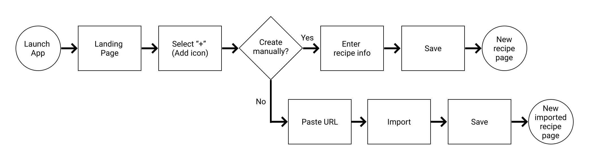
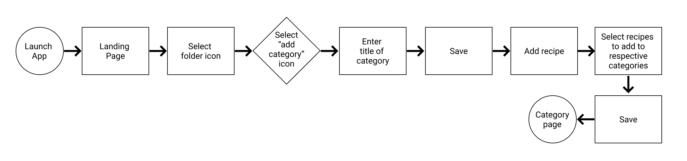

LeChef
Overview
As the world went into lockdown due to the COVID-19 pandemic, stoves were fired up, flour and yeast became sold out. Then recipe exchanges started and web browsers became filled with bookmarked recipes.
The goal of LeChef is designed to organize all recipes - old and new - into one convenient location and can be easily shared with others. The recipes on LeChef can also be customized with notes, conversions, as well as a shopping list function.
Roles
- User Research
- UX Strategy
- UI Design
- Branding
- Content Strategy
Deliverables
- User Survey
- User Personas
- Style Guide
- User Stories & Flows
- Wireframes
- Prototypes
- High Fidelity Mockups
Details
- Duration
- 4 weeks
- Tools
- Figma
- Adobe Illustrator
- Adobe Photoshop
The Challenge
Pinterest.
Emails.
Bookmarks.
Cloud storage.
and hundreds of recipes...
Due to the 2020 global pandemic, people have been trying out new recipes and doing recipe exchanges with others. With the growing collection of recipes, people are having to keep track of which recipes are stored where. Even after the recipe has been found, customization to the recipe may not have been saved and possibly forgotten, frustrating users. As recipe exchanges have gotten increasingly popular, people have found that finding and sharing recipes is not as seamless as one may like.
Understanding the Users
I conducted a user survey to explore:
- how recipes are organized
- what types of organizational tools people used
- desired app features
- people's social media habits
There were a total of 18 participants.
Key Discoveries
100% searched for food recipes on the internet
1 out of 18 currently use a recipe management app
9 out of 17 have recipes bookmarked on their browser
12 out of 17 would like to use a recipe management app to organize their recipes
8 out of 12 would like to see collaborative tools in a recipe management app
14 out of 18 use social media daily
Through the survey, I discovered what type of features users would like to see in a recipe management app as well as how they would like to collaborate with others. From there, I was able to design the app with features that users would like to see included.
User Personas
From the user survey, I gained insight about the motivations and frustrations of users, which helped me create the following user personas.
- Nicolas
- Program Director
- Age: 26 // Gender: Male
- Location: Portland, OR
- "I would like to see a real time collaboration aspect incorporated."
- Motivation
- Nicolas loves to cook, but he learned from his mother and grandma from watching. However, he has recently started browsing the internet for more cooking/baking recipes, which are scattered in different places. With the increasing number of recipes, Nicolas would like to have them in one place for easy access and also share them with friends.
- Frustration
- Nicolas has lots of new recipes saved in various locations. He also wants to enter his family's recipes easily to share among friends.
- Lily
- Small Business Owner
- Age: 37 // Gender: Female
- Location: Brooklyn, NY
- "More customization! I love using the app but their information architecture does not resonate with the way my brain organizes information."
- Motivation
- Recipes are an essential aspect of Lily's life. For her skin care line, she has long lists of recipes for her products she creates herself as well as pages of recipes for her catering side project. In order to keep her recipes organized, she uses a recipe management app. However, she finds the layout confusing and would like more customization.
- Frustration
- Lily finds the layout of the recipe management app she currently uses is confusing. There is also no customization features, such as changing recipe serving sizes.
Branding
Why LeChef?
The name of the app, LeChef, is meant to convey a sense of confidence within the user. When trying a recipe the first few times, the feeling can be daunting -
Will it turn out good?
What if there isn't enough flavor?
Is it cooked enough?
Will others enjoy it?
The title means "the chef" in French and chefs are given that title after years of experience. So the name is meant to give a sense of positivity, encouragement, and creativity for users.
Typography and Colors
Cooking is a creative process and I wanted the app to give off that creative vibe that resonates with a wide range of users. The playful yet elegant characteristics are represented through the selected typography, Dancing Script and EB Garamond. The font pair balances fun and clarity.
The color scheme of orange and red were chosen since these colors spark one's appetite, making people feel hungry, which is appropriate for an app focused on food.
What is important to users?
These factors were discovered through the user survey conducted, creating the following prioritized user stories:
- "I want to create an account."
- "I want to import a recipe from the internet."
- "I want to create a new recipes."
- "I want to import photos and/or videos."
- "I want to create a new category."
User Flows
Through building the user stories, I was able to determine the minimum viable product features to focus on.
"I want to create a new recipe/import a recipe from the internet"
"I want to create a new category"
Sketches
To translate the user flows into tangible designs, I sketched out frames for the minimum viable product.
Usability Testing - round 1
I performed a usability test with 3 users who were asked to complete 3 tasks,

- Signing up for an account
- Adding a recipe from the internet
- Creating a new category
Results
From this test, I observed that users only struggled with creating a new category. Discussions with the testers revealed that the call to action was no specific enough. There was also confusion about where to find the category action, which meant that the flow was not obvious enough for testers.
A/B Testing
During the high fidelity mockup process, multiple design options were created for some frames. In order to decide which options resonated best with users, I conducted an A/B test.


Testers selected Option A because:
- • The gray background represented a stage that was still in process, whereas the light orange color in Option B indicated a finished product
- • The light orange background color could clash with the recipe photo or video selected
The Cherry On Top
Conversion tool
I changed the icon since the original icon was mistaken for a calendar icon numerous times. Also, the icon was also moved closer to the yield amount to show their association.


Upload icon
I moved the location of the upload icon to the center above the description of the call to action for better visibility and clearer call to action for users.

Share frame
I reduced the number of options on the share screen as to not overwhelm users.

Results and Takeaways
View Figma Prototype
The final product fulfills the recipe organizational goal, with key features consisting of creating recipes as well as importing recipes from websites. The app also has a collaboration feature, allowing users to share recipes, which is an important factor during this global pandemic. The personalized feature include converting recipes and directly adding needed ingredients onto an app-embedded shopping list. These additional features give users a more seamless and comprehesive recipe management app. The styling choices made for LeChef will have users feeling inspired to cook and try reciipes on a creative platform.
Some takeaways from this project are:
Test, test, test: Feedback on visual designs and functionality varies from person to person so getting as much feedback as possible is key to a good user experience.
Focusing on the MVP: Additional features can easily distract from the main goal of the product. I learned that throughout the process, there are times when you have to step back and reevaluate where your focus and attention are currently and if it is in the best interest of users and the product to fixate on those features.
Next project
BusyBus